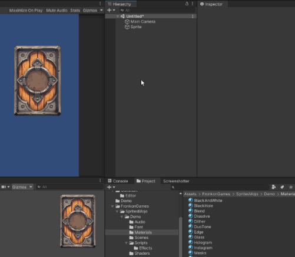

Store
Editor
From the editor you can create ‘Sprites Mojo’ effects in two different ways: creating sprites and creating materials.
To create a sprite that uses one of the ‘Sprites Mojo’ effects, right click on the ‘Hierarchy’ window and select an effect from the list that will appear under ‘2D Object > Sprites Mojo’.

This will create an empty sprite with a ‘Sprites Mojo’ material. When you assign a sprite (1) you will see the effect. ‘Sprites Mojo’ is material based, so you will have to display its material (2) to see its parameters.

All effects have a layout similar to the example above. A first part (3) with the effect parameters. Another part that you can activate to adjust the color (4) and another part where you can adjust sprite values (5).
Finally, by clicking on ‘[doc]’ (6) you can access the online documentation and by clicking on the ‘Reset’ button (7) you will set all the parameters to their original values.
This is the easiest way to create sprites using ‘Sprites Mojo’, but you must keep in mind that it will create a new material for each sprite you create. If your sprites do not share textures between them, no problem. If your sprites share the same texture, the second way is more optimal: creating materials.
To create a material that uses a ‘Sprites Mojo’ effect, just right click on the ‘Project’ window and select one of the ‘Create > Sprites Mojo’ effects. Once the material is created, you only have to assign it to the sprites you want to use it.

Code
All the code is inside the namespace ‘FronkonGames.SpritesMojo’. The first thing to do is to import the namespace:
using FronkonGames.SpritesMojo;You can create sprites that use the effects of ‘Sprites Mojo’ as follows (in this example ‘Retro’):
GameObject gameObject = Retro.CreateSprite();Remember that each sprite will have a new material. If you want several sprites to use the same material with an effect, you can create it that way and then assign it to the sprites you want:
Material material = Retro.CreateMaterial();Each effect has those two functions (CreateSprite() and CreateMaterial()) to create its own sprites and materials. You can find them all in the ‘Fronkon Games/SpritesMojo/Runtime’ folder.
Continuing with the previous example, if you wanted to modify or query any parameter of the ‘Retro’ effect, you can do it like this:
SpriteRenderer sprite = gameObject.GetComponent<SpriteRenderer>();
// Changes the sprite emulation mode.
Retro.Mode.Set(sprite, Retro.Emulations.Gameboy);
// Check pixelation.
int pixelation = Retro.Pixelation.Get(sprite);
// You can also do it with the material.
Retro.Mode.Set(material, Retro.Emulations.Gameboy);
float luminance = Retro.Luminance.Get(material);In addition, all effects have some common parameters that you can access through the ‘SpritesMojo’ class that you can find in ‘Fronkon Games/Sprites Mojo/Runtime’. For example, let’s enable ‘ColorAdjust’ if it is disabled and modify some of its parameters:
if (SpriteMojo.ColorAdjust.Get(sprite) == false)
{
SpriteMojo.ColorAdjust.Set(sprite, true);
SpriteMojo.Gamma.Set(sprite, 1.2f);
SpriteMojo.Hue.Set(sprite, 0.25f);
}All effect variables of type IntVariable, FloatVariable, ColorVariable and VectorVariable can be set to a value and you can specify how long (in seconds) you want the transition to last from the current value to the one you have set. For example, if you want to transition to a pixel size of 8 in 2 seconds:
Retro.Pixelation.Set(sprite, 8, 2.0f);Check the class comments for more information.
Effects
Black and White
Desaturates the image by selecting the intensity for each color channel, the amount of light and the smoothness of the color change.

Black Hole
Create a ‘black hole’ inside the sprite. Use the alpha channel of ‘Color’ to modify the transparency of the effect.

Blend
Use some of Photoshop’s 25 blending modes.

Dissolve
‘Dissolve’ the sprite using a gradient texture as a pattern. Change the mode to ‘Color’ to make a border appear with the color of your choice, or use ‘Texture’ to make it a texture.
This effect has a large list of built-in patterns you can use, but if you want to use your own, select ‘Custom’ under ‘Shape’. This way you can specify the texture you want to use.

Dither
Applies various algorithms to reduce the amount of colors. It also pixelizes the sprite.

Duo Tone
It uses a two-color gradient based on the sprite’s luminance. To adjust the brightness ranges it uses, you can press the ‘Auto’ button or adjust it manually in ‘Luminance’.

Edge
Highlight sprite edges using different modes and algorithms.

Glass
Simulates a glass material, deforming the background.

Hologram
It simulates a hologram or projection.

Apply one of the 15 most used filters on Instagram.

Masks
Applies blending effects, colors and textures to areas of a sprite defined by a mask. The mask is a texture in which you can define up to 3 zones, one for each color channel.

Negative
Change each color by its opposite. You can define how each color channel is affected.

Outline
Creates a border around the sprite outline.

Pinch
Clamp the sprite in a certain area.

Ramp
Replaces the sprite colors with a gradient of 5 colors based on luminance. To adjust the luminance ranges it uses, you can click the ‘Auto’ button or adjust it manually in ‘Luminance’.

To easily find a gradient, click on ‘search’ (1), to open the gradient search tool (internet connection required), or click on ‘random’ (2) to get a random one.

Clicking on ‘sort’ (3) will sort the gradient colors from the darkest (in ‘Color 1’) to the brightest (in ‘Color 5’). You can also ‘copy’ ‘paste’ (4) between sprites with the ‘Ramp’ effect.
Retro
Emulates old devices such as: Gameboy, Commodore 64, ZX Spectrum, etc.

RGB Glitch
Simulates a failure in the RGB color channels.

Shake
Shake the sprite.

Shift
Shitfs the RGB color channels linearly or radially. Enable ‘Noise’ to add noise to the scroll.

Swirl
Twist a certain area of the sprite.

Tremor
Causes tremors in the sprite.

Trio Tone
It uses a three-color gradient based on the sprite’s luminance. To adjust the luminance ranges it uses, you can click the ‘Auto’ button or adjust it manually in ‘Luminance’.

Support
Do you have any problem or any suggestions? Send me an email to fronkongames@gmail.com and I’ll be happy to help you.
Remember that if you want to inform me of an error, it would help me if you sent to me the log file.
If you are happy with this asset, consider write a review in the store
❤️ thanks! ❤️
If you are happy with this asset, consider write a review in the store
❤️ thanks! ❤️
Just write an email to fronkongames@gmail.com